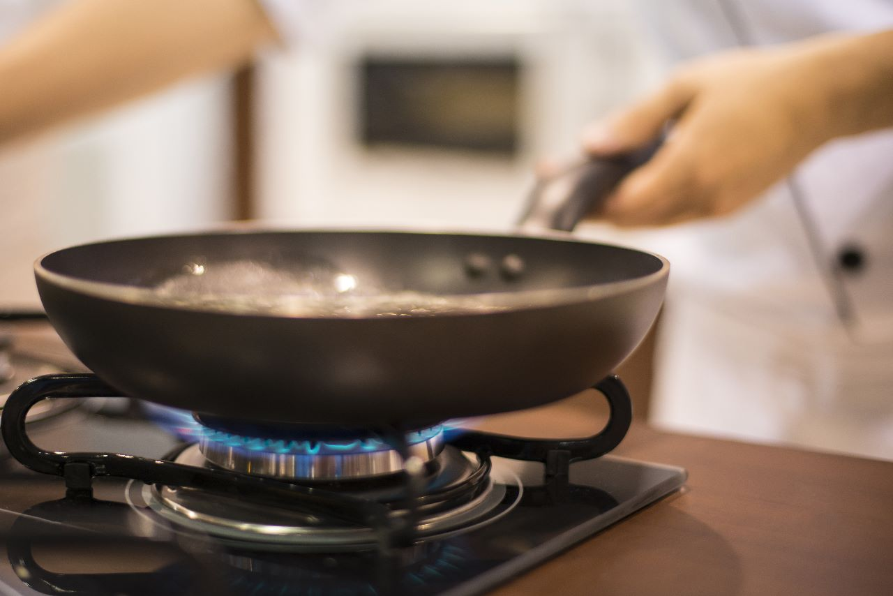
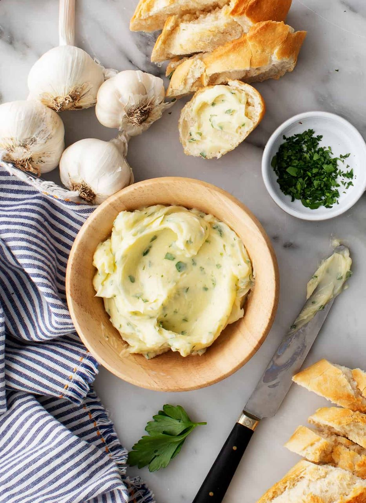
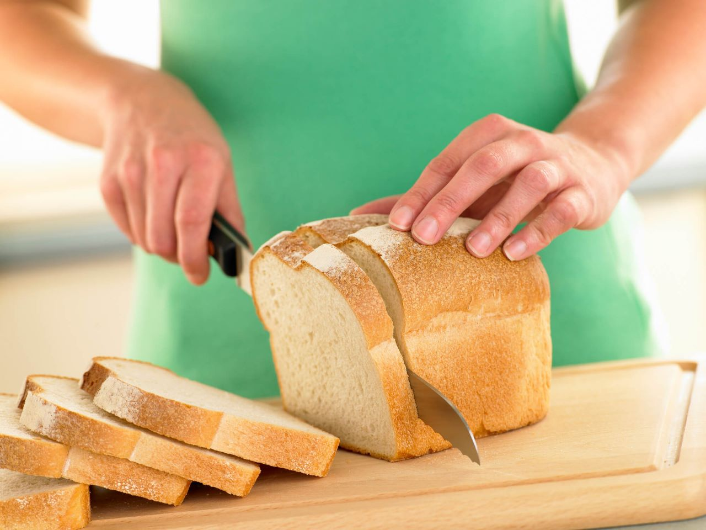
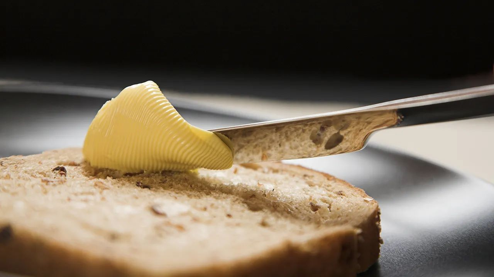
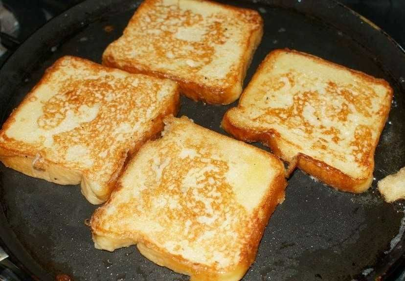
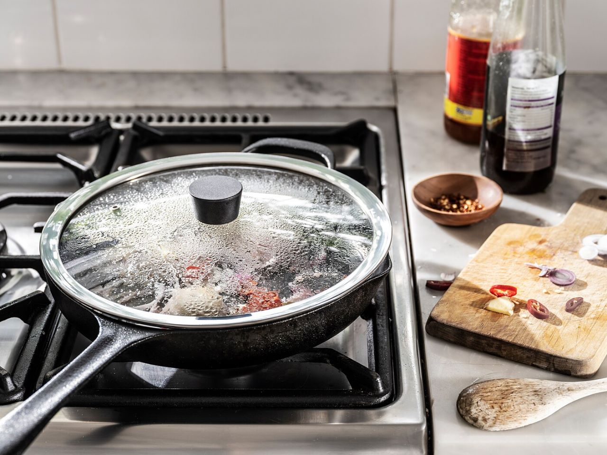
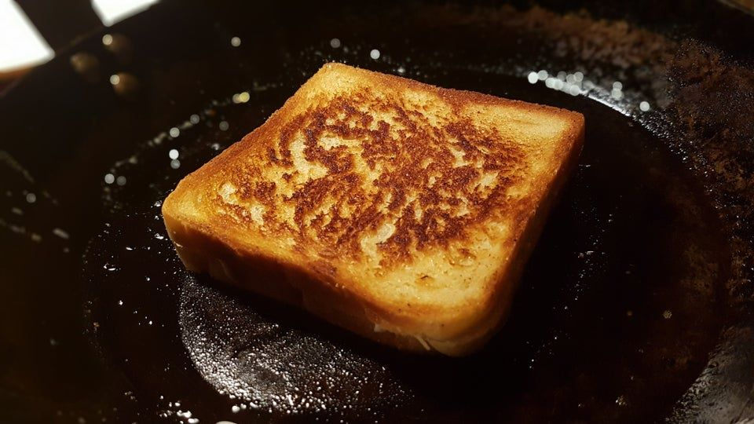
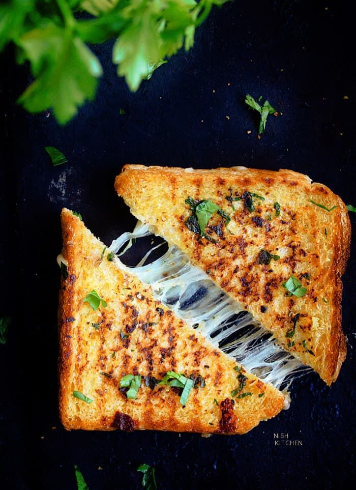

Preheat your pan over a stove.

In a small bowl, combine the softened butter, minced garlic, chopped parsley (optional), salt, and black pepper. Mix well until all the ingredients are evenly incorporated.

Slice the Bread horizontally, creating two long halves. If the bread is too thick, you can also slice it vertically into smaller pieces.

Spread the garlic butter mixture generously on the cut sides of the bread. Make sure to cover the entire surface.

Place the Garlic Bread halves on the pan, cut side up.

Place a transparent lid over the pan so that it can give a oven effect to it.

Let it heat up on the stove until the bread is toasted and the garlic butter is melted and bubbly. Keep an eye on it to prevent burning.
Once the Garlic Bread is done, remove it from the pan and let it cool for a few minutes.

Slice the Garlic Bread into individual pieces and serve warm.
Top-Up your Garlic Bread with some Chilly Flakes to taste the best out of it.